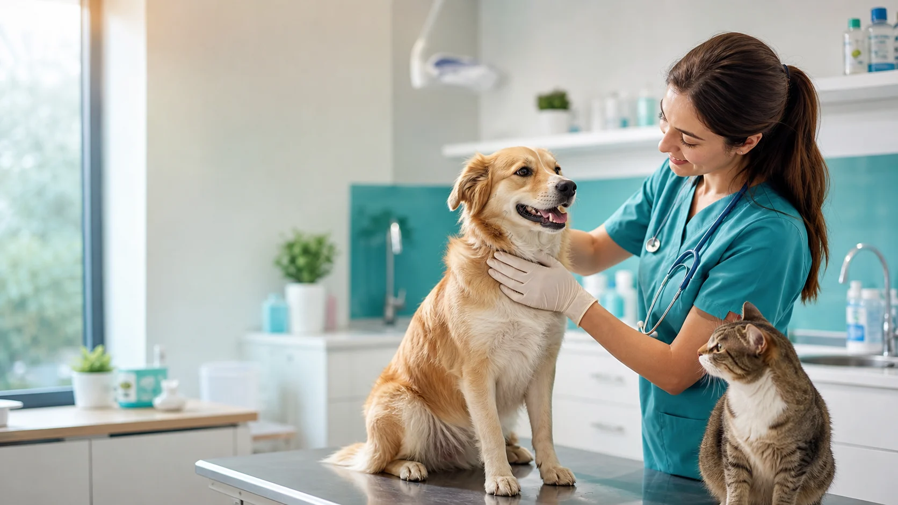
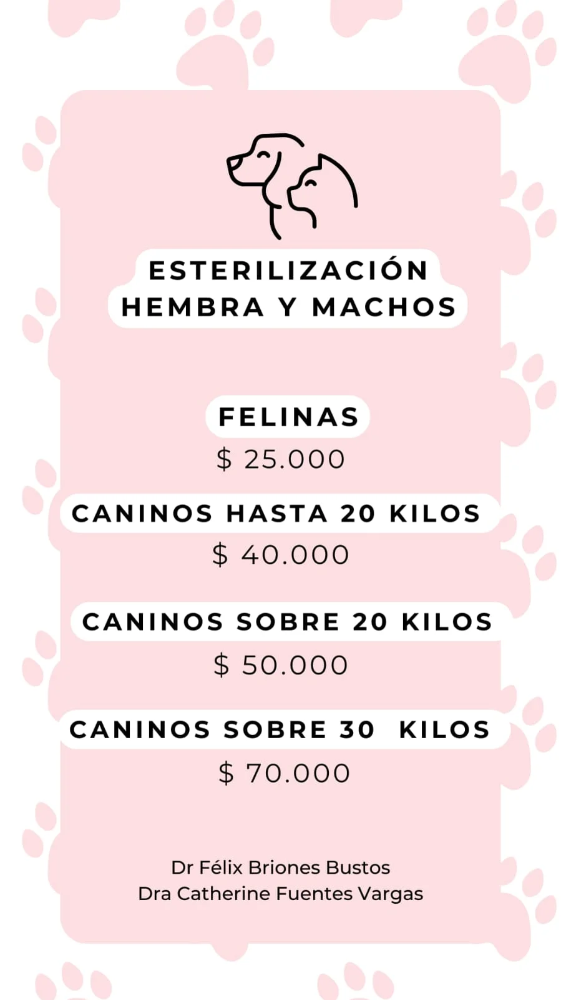
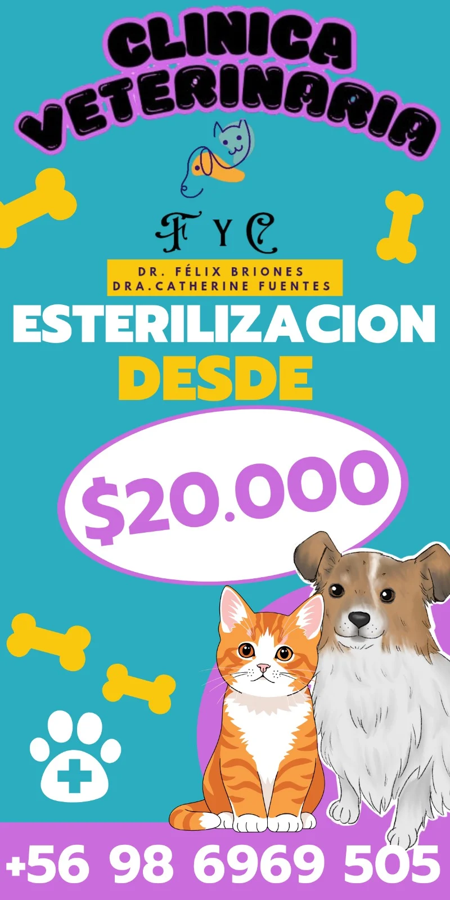
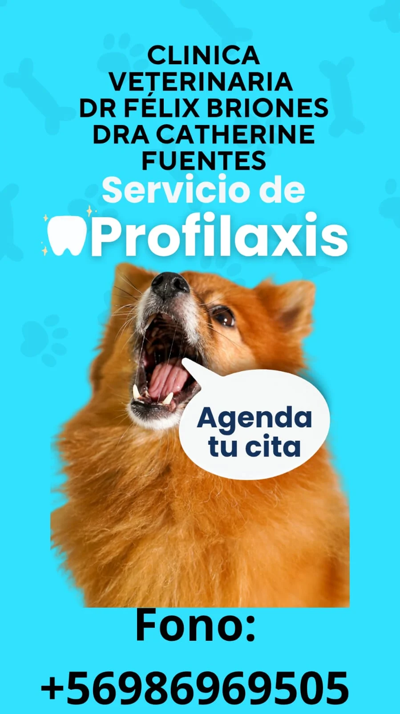
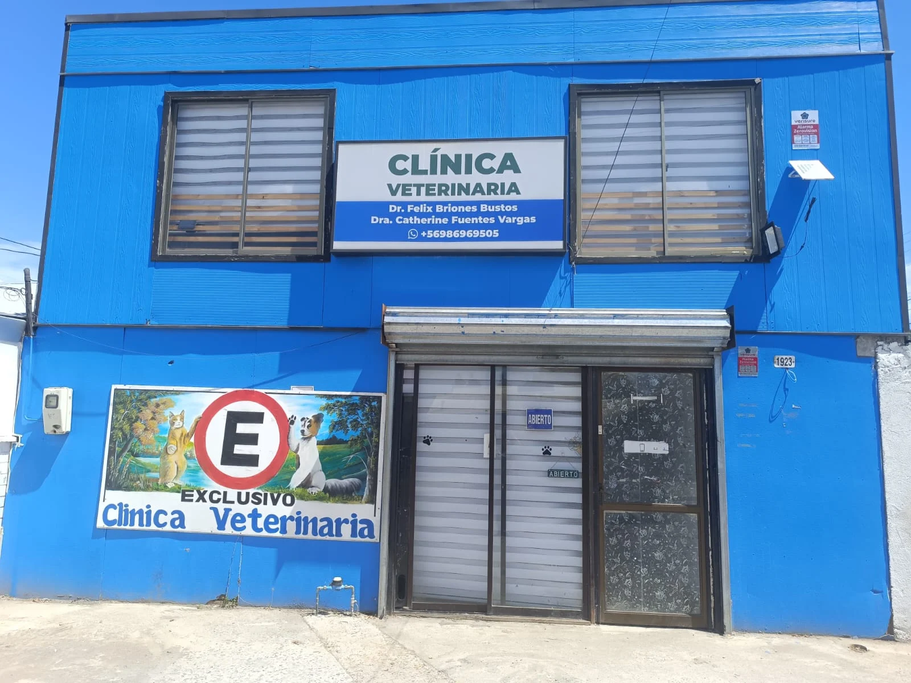
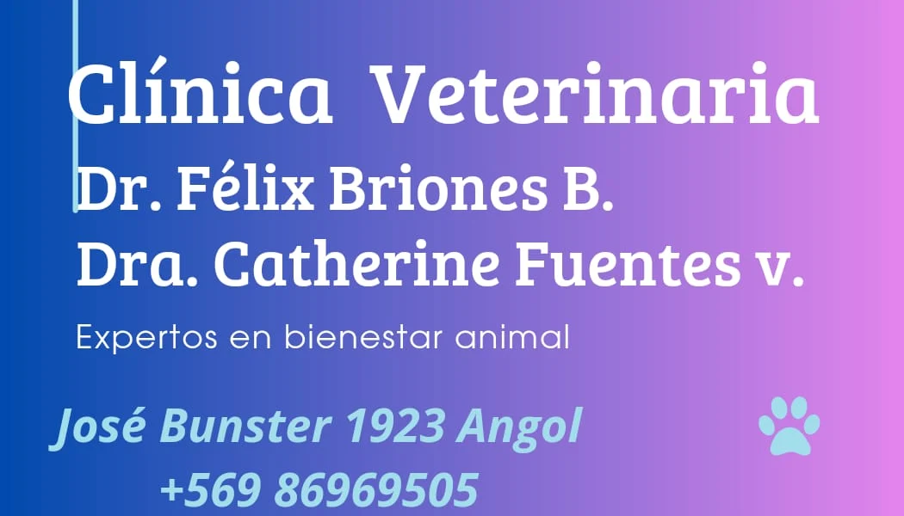
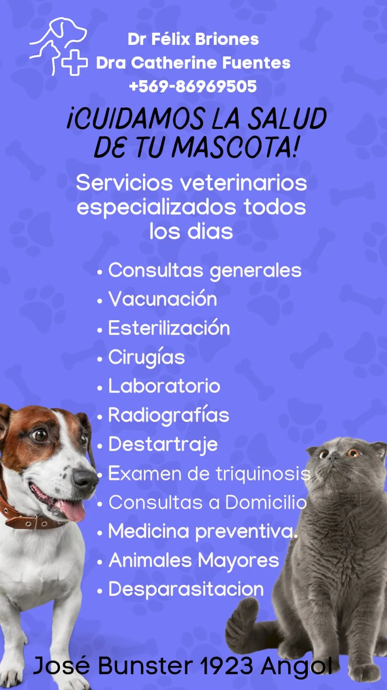
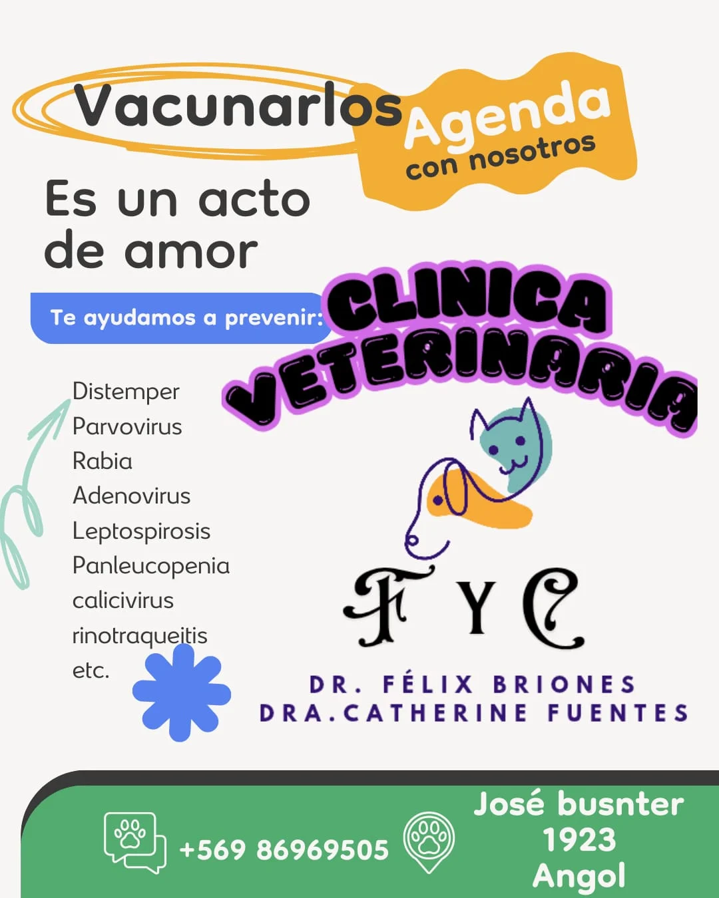

Consultas generales
Evaluación clínica, diagnóstico inicial y orientación para el tratamiento adecuado de cada mascota.

Atención veterinaria profesional en Angol
Cuidamos la salud de tu mascota con consultas, vacunación, cirugías, laboratorio, radiografías, profilaxis y medicina preventiva.
Servicios veterinarios
La oferta fue tomada de los afiches entregados y organizada para que el visitante entienda rápido que puede resolver en la clínica.
Evaluación clínica, diagnóstico inicial y orientación para el tratamiento adecuado de cada mascota.
Protección contra distemper, parvovirus, rabia, adenovirus, leptospirosis y enfermedades felinas.
Procedimientos para hembras y machos, con valores diferenciados para felinos y caninos por peso.
Atención quirúrgica con enfoque profesional, preparación responsable y seguimiento postoperatorio.
Apoyo diagnóstico para decisiones médicas oportunas y control de salud preventivo.
Imagenología para evaluar lesiones, molestias, controles y sospechas clínicas.
Salud dental preventiva para reducir dolor, infecciones y mal aliento.
Servicio indicado en los materiales de la clínica para controles sanitarios específicos.
Una alternativa para tutores que necesitan orientación veterinaria sin trasladarse inicialmente.
Planificación de vacunas, desparasitación, controles y cuidado responsable.
Atención para especies de mayor tamaño, según disponibilidad y coordinación previa.
Control interno y externo para proteger la salud de la mascota y su familia.
Valores destacados
Valores referenciales extraídos de las piezas entregadas. Para confirmar cupos, peso y condiciones, la llamada a la acción abre WhatsApp.
Promoción visible
Campaña promocional publicada por Clínica Veterinaria F y C.
Consultar valor


Vacunarlos es un acto de amor
La medicina preventiva ayuda a evitar cuadros graves y contagios. En los materiales se destacan vacunas y controles frente a enfermedades comunes en perros y gatos.
Procedimientos con seguimiento
La página organiza los valores visibles y orienta al tutor a consultar por peso, cupos, ayuno, indicaciones preoperatorias y cuidados posteriores.
Equipo profesional
La web muestra los nombres reales presentes en los afiches y en la fotografía de sucursal.
Médico veterinario
Atención clínica, procedimientos y medicina veterinaria integral.
Médica veterinaria
Bienestar animal, prevención y acompañamiento profesional para tutores.
Sucursal real
La fachada azul de la clínica facilita reconocer la sucursal. En la foto entregada también se observa señalética de abierto y el número 1923.

Ubicación y contacto
Atención veterinaria especializada todos los días. Horario exacto: confirmar disponibilidad por WhatsApp.
Consulta inteligente
Completa los datos principales y el sistema abrirá WhatsApp con un mensaje listo para enviar al número oficial de la clínica.

Material informativo
Estos recursos quedan dentro de la carpeta assets para reemplazarlos o reutilizarlos en futuras campañas.

